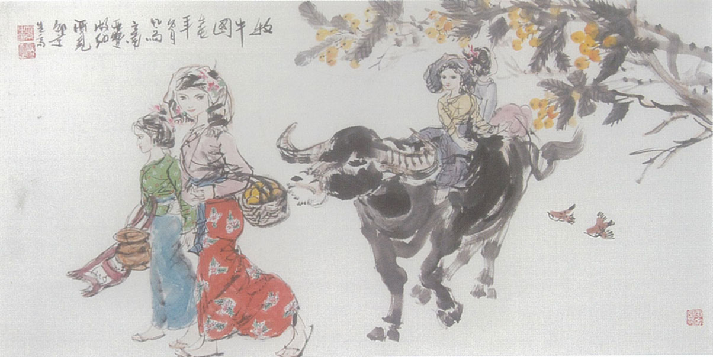

邵京生先生前后六次来新疆写生采风，每次他都认真 了解新疆不同地域的民风习俗。博格达峰下的天山天池、 塔里木河畔、天山深处的哈萨克族牧民人家、原始胡杨林、 火焰山下炎热的吐鲁番盆地及天山南北广袤无垠的戈壁滩，留下他追寻艺术源泉跋涉的足迹。 他对有着火洲之称的——吐鲁番情有独钟。
七月的吐鲁番骄阳似火，气温有时高达五十多度，地表温度更高达70-80度，邵京生戴着草帽，穿着拖鞋，在闻名遐迩的火焰山下的葡萄沟、交河古城、苏公塔下、亚尔乡沙疗所的小巴扎（集市）上， 穿梭在拥堵的人群中； 毛驴车、拖拉机、摩托车、瓜摊、烤肉摊、小饭馆，馕坑前、服装店、小商店、农家小院的葡萄架让他留恋忘返， 用他敏锐的眼光捕捉自己喜爱的人物，用二、三分祌乃至几十秒的速写手法，画下一幅幅栩栩如生的人物画面。
起初，当地的人们对这个穿着随意简单，来自异地，手拿画本，操着一口京腔，到处写写画画的人给予质疑的目光并刻意的回避。 时间久了，当地好客的维吾尔族人们与他熟悉了，热情的招呼他落座，倒茶，聊天。任他随意出入并邀请他画下他们幸福安详的生活场景，看到他们被邵京生神奇的画笔画出的鲜活传神的形象， 他们个个竖起大拇指，脸上露出满意幸福的笑容。有时因为画这个维族老汉而没有画另外一位，那老汉生气质问邵先生说：“哎！画家，我们不是朋友吗？为啥画他不画我呢？ ” 邵先生立马拿起画笔迅速为那老汉画下肖像，他每每都是这样，只要维族朋友有要求，他的画笔就不停歇。
邵先生是一个勤奋而又极富创作热情的写意人物画家，他每天的写生作品高达七、八幅，甚至到了深夜，他也要拿着速写本在亚尔乡沙疗所人迹稀少的小巴扎上转一圈， 看看有没有可画的人物。夜深人静时，在农家小院里，我俩熏着微微的热风，他拿着每天的人物速写作品， 让我欣赏并让我提意见。 我对绘画艺术有一点了解，有时候禁不住他的诱惑，给他提些建议。他给我一遍遍复述并回味他的恩师一一国画大师黄胃先生给他言传身教关于国画艺术的理论及写生经验。 邵先生他说他热爱新疆，更爱吐鲁番，他夸赞着当地的维吾尔族人民群众热情、豁达、 善良，喜欢这里的人们。 他将以黄胄先生为榜样树立在国画艺术上不断探索的信念，会常来新疆，永不退缩，扎扎实实的在绘画艺术道路上走下去， 创作出好的作品来讴歌大美新疆，展现新疆各族人民团结和睦、和谐相处，幸福 生活的画卷。
诚祝邵京生先生在国画艺术道路上走的更远！
龚拥军
2016-2-20
(本文作者:系中国治理荒漠化基金会新疆工作委员会主任）